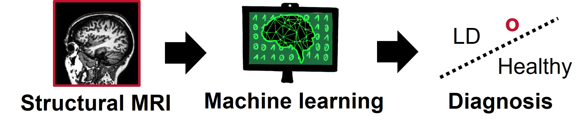
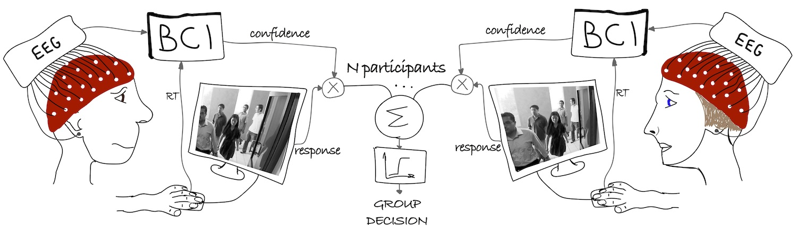
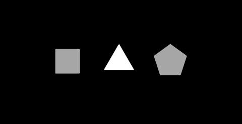
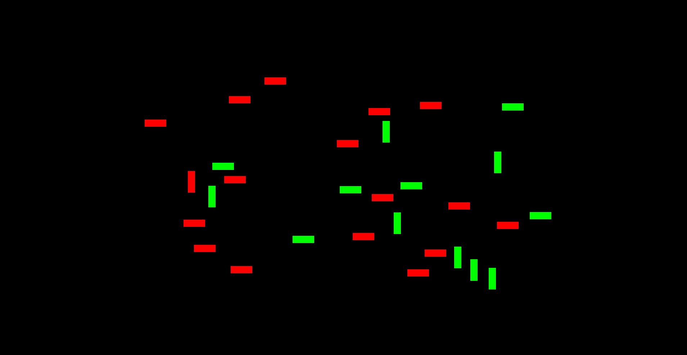
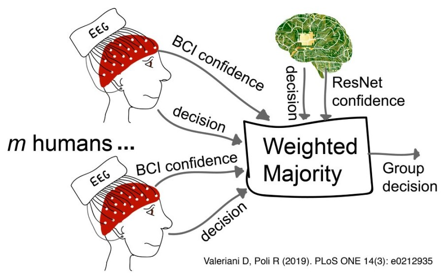
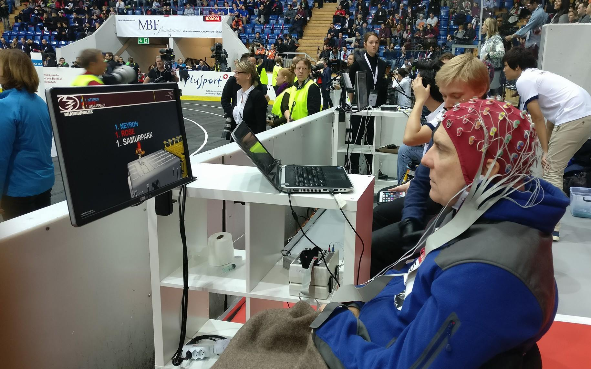
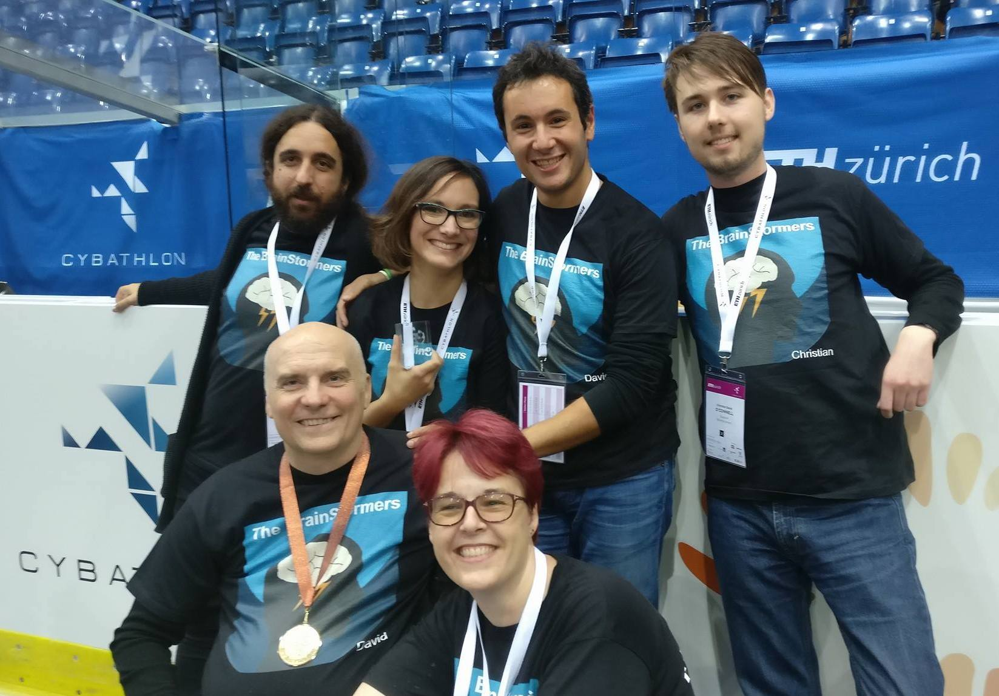
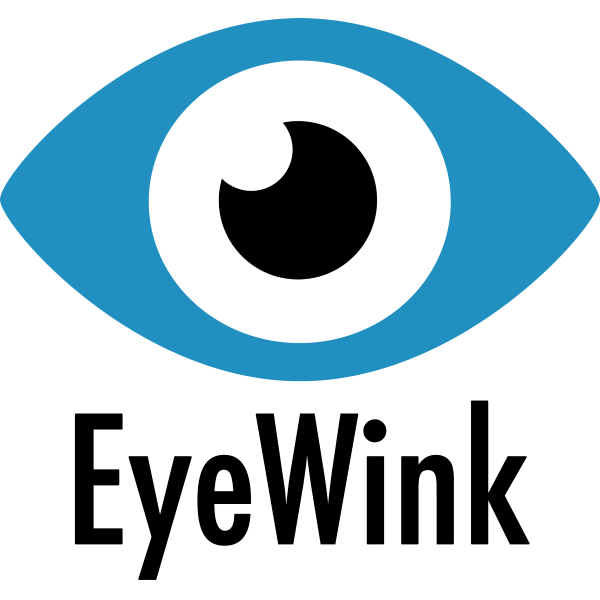
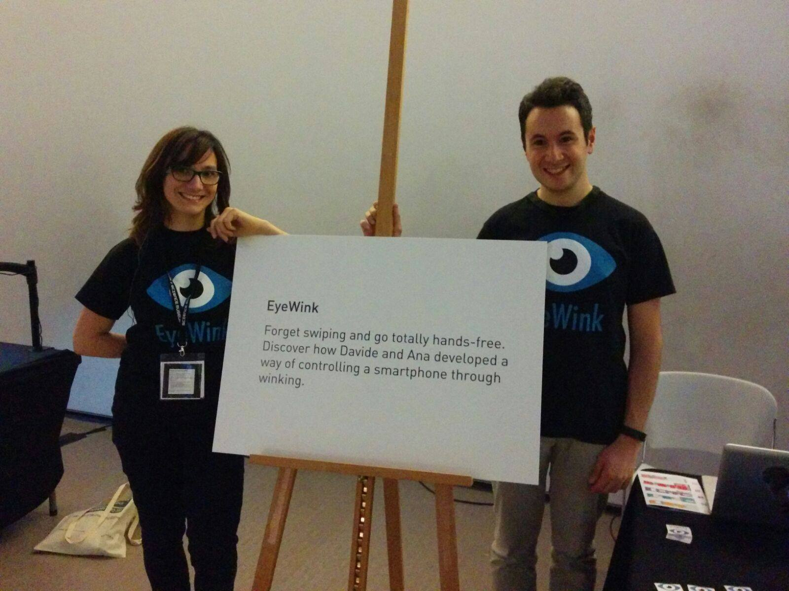

Research
My research focuses on developing neurotechnologies for human enhancement, using neuroimaging and machine learning. In particular, I merge brain and machines to achieve better decisions in critical domains. Below are a few examples.
Automatic Diagnostic Tools of Laryngeal Dystonia
Laryngeal dystonia (LD) is a neurologic disorder causing involuntary spasms in the laryngeal muscles, hence affecting our ability to speak. Its causes are unknown and there are no objective diagnostic criteria.
 In my research, I use multimodal neuroimaging and machine learning to make automatic diagnosis of laryngeal dystonia. More specifically, I envision the neurologist of the future ordering a magnetic resonance (MR) scan, loading the image into a software, and obtaining an accurate diagnosis for the patient in less than a minute. The output of the software could be used as a final diagnosis, or as an additional opinion to help clinicians with their diagnosis.
Collaborative Brain-Computer Interfaces for Improving Group Decision Making
Groups are usually much better than individuals in making decisions (wisdom of crowds). However, there are cases in which groups are not as accurate as expected, for example when composed of overconfident team members.
 My research goal is to develop neurotechnologies that could help groups make accurate decisions, regardless the personality of their team members. In particular, I have developed a brain-computer interface (BCI) able to estimate the confidence in a decision from the EEG signals of a human subject. If all group members are equipped with such a BCI, these confidence estimates could be used to weigh individual decisions and build a group decision. I call this collaborative BCIs, as multiple BCIs are used jointly to improve group decisions.
We tested this approach with a variety of tasks of increasing realism and complexity. We started from visual matching, and then moved to visual search with artificial stimuli or more realistic stimuli of natural environments, speech perception, and face recognition. In all experiments, BCI-assisted groups were significantly more accurate than individuals and groups not assisted by the BCI.



While testing the cBCI, I was also interested in studying the group dynamics. For example, I have found that when people were allowed to exchange information during the experiment, their performance degraded significantly. Their confidence was uncorrelated with the objective accuracy, while the BCI was still able to recover good confidence estimates from their brain signals. See the paper for more details.
 I have also tested the collaborative BCI with cyborg groups, i.e., groups that include humans as well as algorithms that are autonomously able to make their own decisions and estimate their confidence. This research implemented effective human-machine teams for accurate face recognition in crowded environments, a critical task in surveillance. We used a residual neural network (ResNet) trained on millions of images to automatically classify each stimulus as containing or not the target face. Moreover, we gave the ResNet the ability of estimating its own confidence. Our results show that humans and machines working together achieve significantly better decisions than individually. We are now bringing this concept forward thanks to the funding provided jointly by the US DoD and UK MoD with the BARI project (see Honors).
Bringing Brain-Computer Interfaces to People with Disabilities
Many BCIs developed in research labs are never translated into useful tools for people in needs. Pushed by the Cybathlon competition, in 2015 I have teamed up with other PhD students and postdocs at the University of Essex to create the team Brainstormers. Our aim was to develop a real-time BCI to allow David to control a videogame with his brain signals.
Our BCI was able to recognise four different mental tasks from the EEG signals and map them to the corresponding commands in the videogame. One of the most difficult parts to implement was the multi-class classification. For this task, we developed a multilayer ensemble (see this abstract and the relative presentation). We then competed in the BCI race of the Cybathlon, the first international championship for parathletes assisted by technologies. Our student-led team ended up in the third position, bringing back a bronze medal to the UK. Most importantly, we gave hope to David and thousands of other people with severe disabilities.
The BrainStormers were supported by Biosemi, by the University of Essex, and by a crowdfunding campaign with which we raised more than £3,000. Our work has attracted the interest of the media including ITV Anglia and Inside Cybathlon.
 
Novel Human-Machine Interfaces
EyeWink is a concept of a wearable device that allows a user to control his smartphone with eye winks. It detects muscular activity around the eyes by means of two electrodes placed on the forehead. The recorded signals are then processed by an electronic board to identify if the user had winked with either eye (see this paper). Then, winks are transformed in commands and sent to the smartphone to be executed.
After pitching the idea at HackTheBrain UK, my team developed a first fully-working prototype in only 8 hours using OpenBCI. After winning the hackathon, in November 2015 we started a crowdfunding campaign that allowed us to raise £4,605 to support the development, and in December 2015 we co-founded EyeWink Ltd.
EyeWink has attracted a lot of interest from the media and the public. We have presented the technology in the London Science Museum twice, once in April 2015 within the exhibition "You have been upgraded", and once in April 2016 for the Science Museum Lates focused on neuroscience. We have appeared on ITV Anglia, Popular Science, Motherboard magazine, IDG connect blog, IDG connect innovation, the University of Essex daily news, Il Fatto Quotidiano, Resto del Carlino, Gazzetta di Reggio, and Radio Città Aperta.
